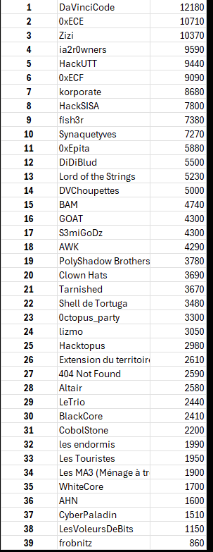
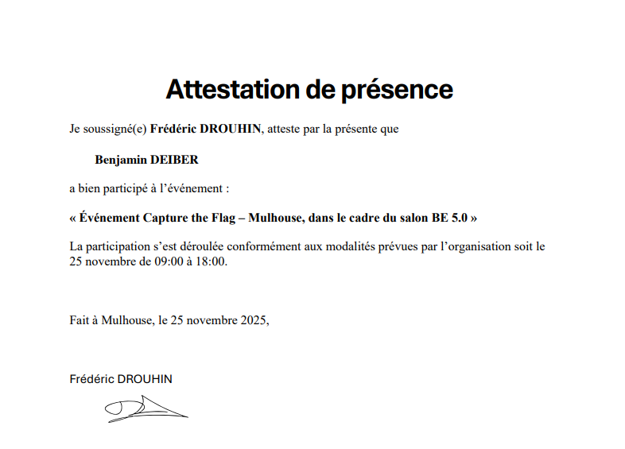
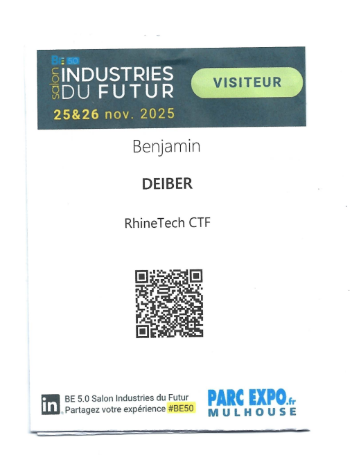

Cybersecurity Competition — CTF November 2025
CTF Rhin Tech 2025
Capture The Flag · Cybersecurity · Team of 3 via IUT of Colmar
#15
out of 40 participating teams
🏆 Top 40% of teams
👥 Team of 3 players
🎯 Participating via IUT
Participation in the Rhin Tech CTF 2025, a Capture The Flag cybersecurity competition organised in the Alsace region. In a team of 3 students representing the IUT of Colmar, we solved challenges in various cybersecurity categories. Final ranking: 15th out of 40 participating teams.
Challenge categories
🔐 Cryptography
- Symmetric / asymmetric encryption
- Hash analysis
- Steganography
- Encoding / decoding
🌐 Web
- SQL Injection
- XSS — Cross-Site Scripting
- Authentication flaws
- HTTP header analysis
🔍 Forensic & OSINT
- File analysis
- Metadata and digital traces
- OSINT (open sources)
- Data recovery
💻 Pwn & Reverse
- Binary exploitation
- Reverse engineering
- Assembly code analysis
- Buffer overflow
Tools & techniques used
What I learned
- Applying ethical hacking techniques in a legal context
- Team work under pressure with strict time management
- Discovering varied CTF categories: web, crypto, forensic, pwn
- Using professional cybersecurity tools under Kali Linux
- Methodology for analysing and solving complex problems
- Real competitive experience and cybersecurity atmosphere
BUT R&T Skills Framework
Proof
Participated in Rhin Tech CTF 2025, ranked 15th/40 teams. Organised via IUT of Colmar. CTF website




